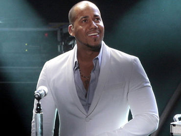

Romero Santos sigue arrollador
 El bachatero Romeo Santos sube esta semana en la lista de Latin Songs de Billboard del segundo al primer lugar con el tema "Promise", que interpreta con Usher y que se desprende de su primer álbum en solitario, "Fórmula: Vol. 1".
El ascenso de Santos hizo caer a Maná del primero al segundo escalón con el tema "El verdadero amor perdona", que el grupo de rock mexicano interpreta con el joven artista urbano Prince Royce.
"We Found Love", que la cantante de Barbados Rihanna canta acompañada por Calvin Harris, sube del quinto al tercer lugar, mientras que "Te quiero a morir", de la Banda El Recodo de Cruz Lizárraga se mantiene en la cuarta posición.
El Nene La Amenazzy con un año coronado de éxitos
SANTO DOMINGO.- Para el cantante urbano El Nene La Amenazzy el 2016 fue un año coronado de éxitos.
José Daniel Betances, su nombre de pila, se presentó a lo largo y ancho de la República Dominicana, siendo aplaudido en cada actuación.
Nacido en Santiago de los Caballeros el 4 de agosto de 1995, es hijo de José Apolinar Betances y Saulia Altagracia Espinal.
Inició sus estudios en el colegio Fausto Jiménez, luego pasó al San Martin de Porres y el bachillerato lo hizo en el instituto tecnológico México y terminó en el colegio Simón Bolívar, todo esto en Santiago de los caballeros.
Su sonado apodo “El Nene” obedece a que cuando tenía unos 10 años formó parte de una agrupación de aficionados y como era el más pequeño decidió apodarse de esa manera.